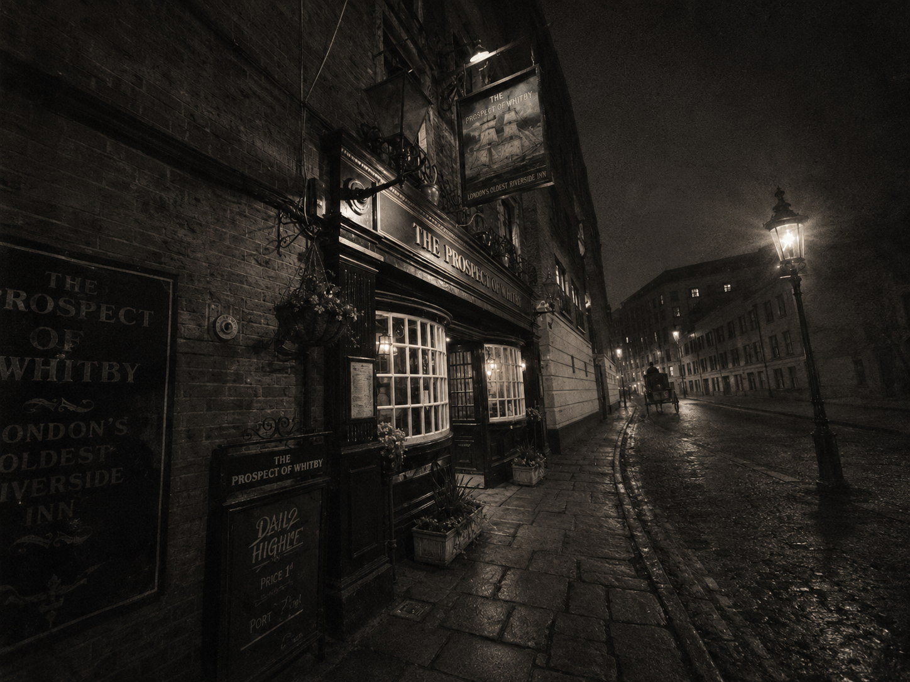
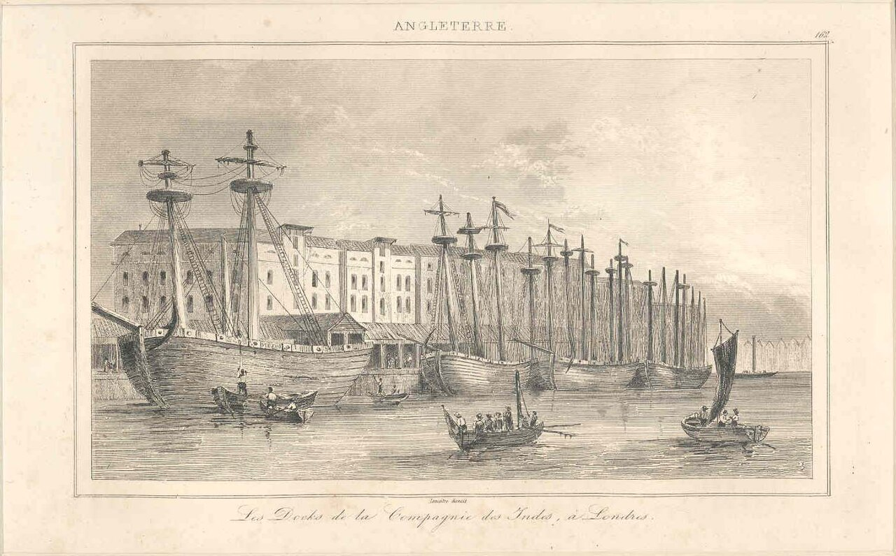
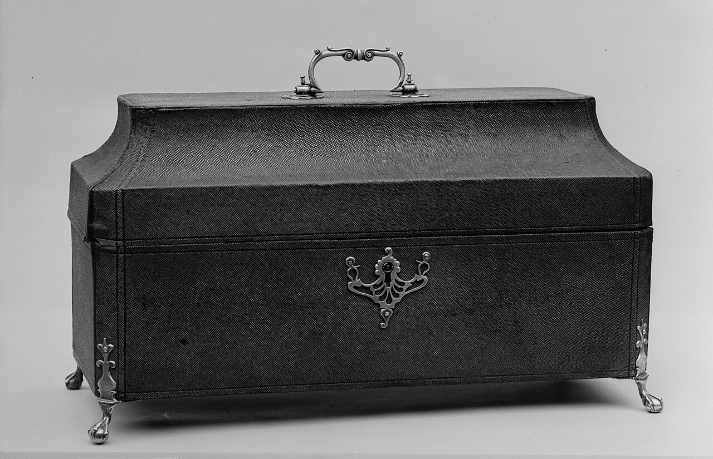
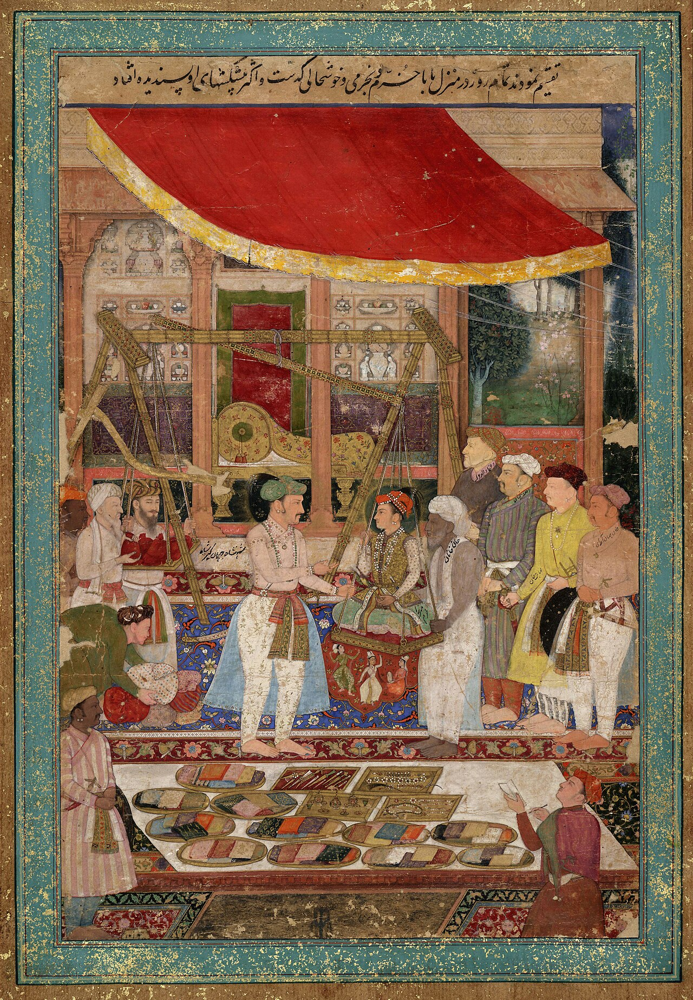

Chapter Eleven
2019
"They have kept the beams and the flagstones. They have not kept anyone who remembers what the beams were for."
— Visitor's notebook, Wapping, 2019
2019: What the Suit Didn't See

Chapter Sections
I. Authentic

Eight taps behind the bar now, and not one of them pours anything that existed when this room was new. The beams are original. The flagstones are original. The floor still slopes toward a river that used to carry tea and opium and now carries, mostly, sightseeing boats. Everything about the Prospect of Whitby that can be photographed has survived. Almost everything that cannot has not.
The pub's been called the Prospect of Whitby a long time now. Before that, the Devil's Tavern — a better name, but the people who run these things prefer something tourists can say without giggling. There's a sign outside with a ship painted on it, lit up along with everything else on this stretch of river these days, and under the sign, hanging baskets of fuchsia — crimson, purple, absurdly alive — which the tourists photograph as set-dressing and which are the one thing on the frontage the heritage menu doesn't claim and couldn't: two centuries of cuttings of cuttings, the oldest living thing on the premises. The world is too bright here now, most nights.
Round the river side, out over the foreshore, hangs a gallows — a replica, a noose swinging photogenic above the low-tide mud — and the tourists photograph each other grinning under it, which is fair enough, since nobody grinning has any way of knowing that the mud below is the same mud, and that it has held the real thing's custom: Every's six in one November, Kidd twice in one afternoon, and the crowds who came down with their pies to watch.
What's changed is everything but the bones. One tap used to serve this room; ale dark and warm, tasting of the river. Now there are eight, pouring things called Hop Fathom and Mudlark IPA, and the ale is still good — different, but good. There's a laminated menu with tasting notes. A section called 'Heritage,' three paragraphs, two of them wrong. A gift shop selling mugs and keyrings. A TripAdvisor sticker on the door.
The tourists come by boat and by tube, because they've read this is the oldest pub on the Thames, that Dickens drank here, that pirates drank here — true, mostly — and because they've read that it's authentic. That's the word they're here for. A photograph proving they stood somewhere real, somewhere with depth, not another gastropub with the same reclaimed-wood tables as the last four.
It is real. But the tourists see the version in their guidebooks — the quaint exterior, the river view — not the Company ships that used to pass this window, not the men loaded onto them along with the pepper and the opium, not the money and the bodies the river has carried. They see what they came to see. No particular cruelty in that. Just the ordinary habit of mistaking the surface of a thing for the thing.
Across the river, towers stand where none stood before — dozens of them, glass and steel, doubling the sky back at itself until the skyline looks copied and pasted into infinity. Canary Wharf sits on the old West India Docks, built 1802, once the largest enclosed docks on earth. Sugar, rum, cotton, timber, and the men who unloaded it all. Now it's banks and hedge funds doing, in better shoes, what the Company did — moving money, extracting value from labour none of them will ever see.
II. The Student of the Company

The suits arrive on a schedule you could set a clock by — five o'clock the early ones, wound tight off the trading floor; six the main wave, still in packs; half six the stragglers, one more call finished before New York closes.
This one's a straggler, alone, which is unusual — navy suit, no tie, shoes that cost more than most people's rent. Orders a Mudlark IPA, drinks half in one go, and exhales like the day is finally leaving his shoulders.
He's reading something on his phone. Looks up at the towers across the river. Back at the phone. Making a connection.
News has entered this room by proclamation nailed to a post, by a sailor reading a newspaper aloud and badly, by a boy from the Times with a notebook, by wireless, by siren. Tonight it arrives silently, straight into one man's palm, and shares itself with nobody.
This place, he says to Hannah. The East India Company lot used to drink here, right?
Some of them, probably, she says. It was a sailors' pub. Anyone with a boat came through.
Incredible, he says. He means: I just read about this and want to talk about it.
Hedge fund manager, almost certainly — the laptop bag has a logo from a firm that clearly commissioned its branding before it had much else to brand. He trades. Doesn't make anything, grow anything, build anything. Moves money from one column to another and keeps a slice, and the slice bought the suit and the phone and this pint.
What he's found on his phone is the East India Company as a business case study. Joint-stock model. Capital pooling. Shareholder returns. He's excited the way finance people get excited by a case study — academically, no horror attached. He's come here because it's authentic, because he wants to sit where the original sat and feel some line running between what he does and what they did. He doesn't see the irony — that his glass tower stands on the docks where the stolen goods came off the ships. He sees a business model made real over a good pint.
III. The Experience
She comes in with her husband — matching rain jackets, which is either a coincidence or a choice, and neither option is good. American, loud in the friendly way, not the rude way. She has an actual paper guidebook open to a photo of this pub and a rating: four out of five stars. Hard to say what the missing star's for.
This is the one, she tells him. Oldest pub on the Thames. Fifteen twenty.
That's old, he says, with the reverence of a man from a country that calls 1975 historic.
She photographs the bar, the fireplace, the river, him, then both of them, then reviews and deletes two and takes one more. Behind them, a man at the bar is trying to convince his mate that the football score he's just been texted cannot possibly be right, and won't be talked down from it.
Her husband rests his pint on the small table by the window and it rocks, just slightly, enough that the beer threatens the rim. He glances underneath, finds nothing obviously wrong, shrugs, and folds his coaster in half, wedging it under the short leg the way people have apparently been doing at this exact table for the better part of two centuries. Fixed, he says, pleased with himself, and doesn't think about it again for the rest of the evening, which is exactly how a two-hundred-year-old repair is supposed to go unnoticed.
Five hundred years of people drinking here, she says, sitting now with her Pimm's. Can you imagine?
That's a lot of beer, he says. She laughs.
There's no cruelty in it. They're tourists, consuming the past the way you consume a meal — in portions, with a rating attached. She walks to the window and photographs the towers across the river too.
What are those buildings?
Bank buildings, I think.
They're beautiful.
They are. That's the trouble. The machine has always been beautiful — the Company's ships were beautiful, its headquarters on Leadenhall Street was beautiful. Empires are beautiful from a distance. From underneath, less so. But from across the river on a clear evening, glass catching the light, nobody needs to know the rest of it to enjoy the view. The pub's heritage section doesn't mention the Company. The Company isn't part of the brand.
IV. Tea

He comes in at eight — not a tourist, not a suit. High-visibility jacket, steel-toed boots scuffed from miles of concrete. Somali, audible in the phone call he takes by the door, a sound this river has heard before, back when the word for it was Lascar and the Company brought men like him over by the thousand, paid them less than English crew, and left them here once the unloading was done. Some things change their name and keep their shape.
He orders tea, not a pint. Hannah pours it without comment. He holds the chipped mug in both hands for the warmth of it, not for the tea.
His phone rings. He answers low, turns half away from the room, says something short, hangs up. His body's in Wapping. The rest of him is somewhere else — Mogadishu, Hargeisa, wherever home actually is. Home is never here for men who load containers. Here is just where the work is.
The room has always held more languages than it admits — Cantonese rules recited at dawn, Swedish grief with its floors and walls, a wife's four words of English, a Lascar's three — words that crossed the world and kept their furniture. Somali is just tonight's.
Ten feet away the hedge fund manager is still reading about the Company on his phone. Same pub, same evening, same river. One moves money, the other moves boxes, and the chain between them is long enough that neither will notice it tonight.
He finishes his tea, pulls his jacket tight, and looks once at the river before he goes back out into the cold.
Hannah never rings the tea through. There is no slate behind this bar anymore — the card machine did for it years back — but every keeper of this room has kept one in her head, because a bar that cannot owe and be owed is only a shop. A week of grace chalked for a dockworker in the crash of '72; a rigger's wife's old slate settled with a flowerpot; tonic water written under candles and pipe-clay; a mended bodice paid for and never collected. The tea goes on the same ledger, the one nobody audits: the house's counter-book, four centuries old, in which every entry is eventually forgiven, which is exactly what makes it the opposite of every other ledger in this story.
V. Thirty Percent
The hedge fund manager has found an audience — the American husband, trapped at the bar for a second pint and too polite to leave.
Thirty, thirty-five percent annual returns, the hedge fund manager says. For decades. Nobody's hedge fund does that today. And the joint-stock model — they invented it. A hundred investors pool a few hundred pounds each, suddenly you've got a fleet and a private army. Every IPO on the Exchange traces back to a room in 1599 asking what if we pooled our money and went to India.
That's pretty cool, the husband says. He means it. He's on holiday, allowed to find things cool.
Cool isn't the word. Foundational. First multinational. First board of directors. First corporate lobbying operation too — they had men in Parliament before most people knew what Parliament was.
He's right about the facts. What he doesn't mention: the opium, the largest drug-smuggling operation in history, built to cover Britain's tea habit. Bengal, and ten million dead in the famine his own Company's tax policy helped cause. He doesn't mention it because he doesn't know it, or because he's filed it under historical context, which is where inconvenient facts go to stop being asked about.
This room has heard this same explanation change its clothes for four hundred years. Exploration, then trade, then civilisation, then governance, then history. Tonight, a case study. The explanation keeps changing. The thing being explained does not.
He's pleased with himself — feels he's honoured the place by knowing its business model. He hasn't. He's consumed its mythology the same way the tourist consumed its postcard. The history here isn't a business lesson. It's a warning. Warnings don't return thirty percent.
VI. The Officer's Drink
Two juniors from the five o'clock wave, ties in pockets, second round. One orders a gin and tonic — a double, the good tonic — because it is 2019 and gin has a menu in this pub now, forty bottles long, the parish poison of 1750 reborn at twelve pounds a serve.
His colleague makes the face, and says the thing. It doesn't need printing. It is the tired little insinuation that has attached itself to certain glasses since some forgotten mess dinner — a joke whose entire ambition is to make another man account for his drink, and whose entire wit is the eyebrow it arrives with.
The man with the gin doesn't look up from his phone. He lets the remark stand alone in the middle of the room until even its owner can hear it — which takes about three seconds, and visibly feels longer.
Hannah sets the glass down with the only garnish this house keeps: Officer's drink, that. Quinine against the malaria, bitter as a lawsuit; the gin and the lime are to get it down. Every man who ran the Empire east of Suez drank them on doctor's orders. Most imperial object in this building — and I'm counting the beams.
Cheers, says the man with the gin, mildly, to the room in general, and drinks. It is the last worn coin of four centuries of toasts this bar has taken — for King William, to nothing, to absent friends — melted down by use into one word that swears allegiance to nothing but the next mouthful.
The room has watched drinks change their clothes for four hundred years, the way it watched explanations do. Dutch physic becomes English courage; mother's ruin becomes a gentleman's measure; the fever ration of the hardest men the Empire ever exported comes home, loses its malaria, and is asked to answer for its manliness by a man whose bravest daily act is hitting reply-all. It was an insult when it arrived in 1603, too. The drink has outlived everyone who ever needed it to say something about the man holding it, and it isn't finished.
VII. The Same River

The Somali man comes back in from his call, cold riding in with him. Same stool, same mug, another tea. Three feet from the hedge fund manager now, Hannah pouring for both of them at once.
The hedge fund manager glances over — the kind of glance that registers a person and dismisses them in the same half-second. Sees a hi-vis jacket. Doesn't see a name, a family, a country made both closer and further away by the same supply chain that built his tower. Sees labour. A component. The way a driver sees the road but never the tarmac underneath it.
The Somali man doesn't glance back. Doesn't need to. He knows exactly what a Canary Wharf suit looks like — sees a dozen a day, riding past in taxis, shoes worth a month of his rent, sharing his exact stretch of river in a completely different economy. He loads the containers that carry the goods that men like this one eventually price and trade. The chain runs straight through this room tonight, the way it always has, and neither of them says so, because saying so costs more than either has to spend on a Tuesday.
On his way out, there's half a second — the hedge fund manager looks up, their eyes almost meet, the Somali man gives the small nod one stranger gives another: I see you, that's enough. The hedge fund manager nods back, automatic, not quite seeing him at all. Then the door shuts and he's gone, back to whatever bus takes him to wherever he actually lives, which isn't here, which is never here.
At low tide, on the foreshore below the gallows, the mudlarks work the mud with trowels and licences — hobbyists now, where the trade used to be hunger. One of them comes up the stairs at dusk with the day's take in a tobacco tin and shows Hannah, for the price of a pint, the best of it: clay pipes, a musket flint, a garter buckle. And one coin. Gold, thin as a fingernail, stamped with writing that runs the wrong way and no king's head she knows. Foreign, the mudlark says. Old. Sailor dropped it, probably. Hannah turns it over twice and hands it back, and the river, which has held the question since before this house had glass in its windows, says nothing whatsoever about the others.
Somewhere across the river, in a terraced house in Bow, a great-great-granddaughter of a Causeway chandler and a Swedish sailor off the timber ships keeps three things she has never connected: a fuchsia in the yard that predates every fence around it; the steadiest hands in her school's first-aid course; and, at the back of a wardrobe, a parcel wrapped in paper gone the colour of weak tea — her grandmother's grandmother's, never to be thrown away, never to be opened. She could not tell you why. She keeps it anyway. Some families keep things the way some buildings do. In this part of London it runs in the blood and the brickwork both.
The river doesn't care who's drinking and who's carrying tonight. It carries the tea, the gin, the containers, the money, all of it, without preference. That's what rivers do.
VIII. What Hannah Found
The refit happens in January, when the tourist season's thinnest and the brewery finally agrees to the new cellar cooling system it's been promising since the autumn. Three days, the contractors say. It takes five, because nothing about a building this age goes to schedule, and on the third day, pulling the old bar counter away from the wall to run a cable behind it, one of them finds a gap in the timber that isn't structural — too regular, too deliberately worked, low enough that you'd have to duck and reach to find it at all.
Hannah — the fourth of that name to keep this bar, or the fifth, depending on which aunt is doing the counting, though she's never made a thing of it, the way none of the Hannahs ever have — is the one who actually puts her hand into it. Her gran mentioned something once, years back, half a joke over Christmas dinner: don't ever let them rip that old counter out without checking underneath it first, whatever you do. Family superstition, Hannah always assumed. The kind every family has about some floorboard or houseplant that nobody remembers the reason for and nobody wants to be the one who's wrong about ignoring.
She isn't wrong.
Her hand finds a scored patchwork of notches first — dozens of them, worn soft at the edges, cut by more than one hand over more years than she has any way of counting. Then, wedged further back where a draught's kept it dry longer than seems possible: a small brass thimble, tarnished black. A twist of paper, brittle at the folds, ink faded to the colour of the wood around it, a handful of words about a ship called the Quedagh Merchant and a name — Nathaniel Cross — still legible if she tilts it to the light. And behind that, less old, its blue cover gone the grey of everything left in the dark too long: a notebook, pencil still in the spine, dates in a neat clerk's hand running from September to a page that simply stops, mid-list, mid-war, mid-sentence almost, as though someone meant to come back to it and didn't, or did, and just never needed to add another line.
Hannah sits on the floor behind her own bar for a long time, holding three centuries in one hand and no idea, yet, what any of it means.
That's, um. She doesn't finish the sentence either.
She reads the notebook there on the floor, cover to cover, by phone-light. Dates, tonnages, streets that stopped existing between one entry and the next. And in the middle of the worst month, once, a line that isn't damage: Fuchsia flowering, west sill. Hannah looks up, through the doorway, to where six baskets of the same plant are flowering over the front door this minute — split and re-potted by every keeper since, herself included, because you do it the way it's always been done. Whoever kept this book stopped once, mid-catastrophe, to write down that a flower was managing. Hannah decides, on the floor, in the dust, that it is the most useful thing anyone has ever told her about the war.
She doesn't call the brewery. Doesn't call a museum, not yet — not until she's had longer than an afternoon to decide what a discovery like this is actually for. She photographs it, properly, the way none of this book's tourists have ever photographed anything, and puts the three objects back exactly where she found them, and asks the contractor, with more force in her voice than the job requires, to leave that section of the wall precisely as it is.
IX. What Doesn't Show in the Photograph
The bar empties the way it always does — tourists first, back to their hotels; suits next, back to their towers; the stragglers last, the ones for whom this is a place and not an experience. Hannah wipes down, turns off half the taps, stacks the coasters.
The room holds what it always holds: everything that's happened in it, unevenly remembered. A contract folded and unfolded on this bar four centuries back. A man's shaking hands. A number somebody couldn't stop repeating. A triangle drawn in spilled ale. A woman watching for a husband who never came. A confession about a well. A shareholder's ten and a half percent. A notebook filling up with bombs. Three of those things are sitting in a gap in the timber a few feet from where the hedge fund manager had his pint tonight, found and photographed and put back, and even now they explain almost nothing — a thimble, a scrap of paper, a notebook that stops mid-sentence, three objects standing in for everyone in this book who left nothing behind at all. None of it is on the walls. None of it is in the heritage section. The beams don't announce what they've seen. A building doesn't testify — it only stands, and leaves the noticing to whoever happens to be standing in it.
And under all of it, older than any cargo, the room's longest-serving trade: the women who waited. For boys who signed. For a factor three years silent. For a husband off a Company ship. For a rigger in the Brazils with a plant between his knees. For a fireman son in a burning dock. The marks Ashby cut under the counter were the first entries in that ledger, and it is the only one this book has never once needed to explain, because every century has known how to read it on sight.
Most nights, not much gets noticed. The tourist's photographs hold a room, tastefully lit, four stars out of five, and none of the four hundred years the guidebook promised her. The hedge fund manager doesn't photograph anything — the case study's already filed away as inspiration, everyone it was built on stripped out of the file. The room doesn't especially remember him either. He's one of thousands who've warmed their hands here on a drink they didn't order for the taste.
That's the ordinary condition of the place. It holds more than anyone passing through will ever ask to see. None of it is contradicted by the eight taps and the gift shop. It simply isn't required by them — the way a ledger can sit accurate and true in a drawer for two hundred years, no longer opened, no longer asked.
Outside, the tide is going out. It'll be back in six hours and gone again six after that, on a schedule older than the Company, older than the docks, older than the towers across the water. It has never once been wrong about what it is: water, moving toward the sea, indifferent to what it's asked to remember.
Hannah's own drink, when the last lock is turned, is a gin and tonic — a habit she has never once examined — taken standing at the dark window, where the streetlight catches the fuchsia over the door. Quinine, juniper, lime: the empire reduced at last to something a woman can hold in one hand, drunk in ten quiet minutes beneath a flower that crossed the same ocean for love. She rinses the glass and sets it to drain.
The last light goes off over the bar. The building settles, one small private creak in old timber — the sound of something old absorbing, without comment, one more evening it won't be asked about tomorrow.